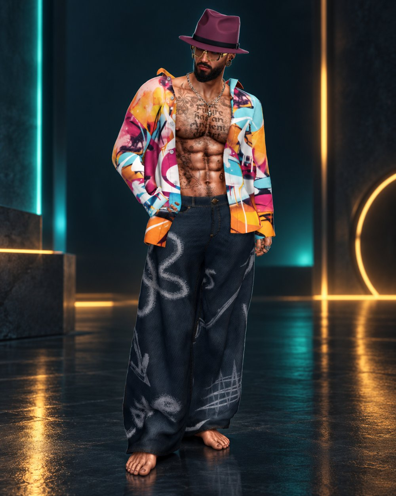
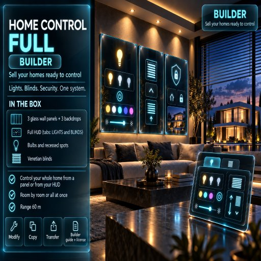
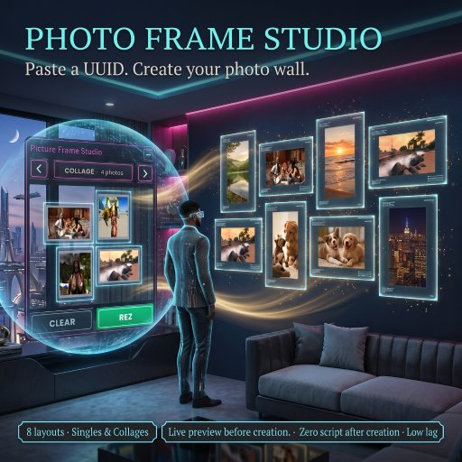
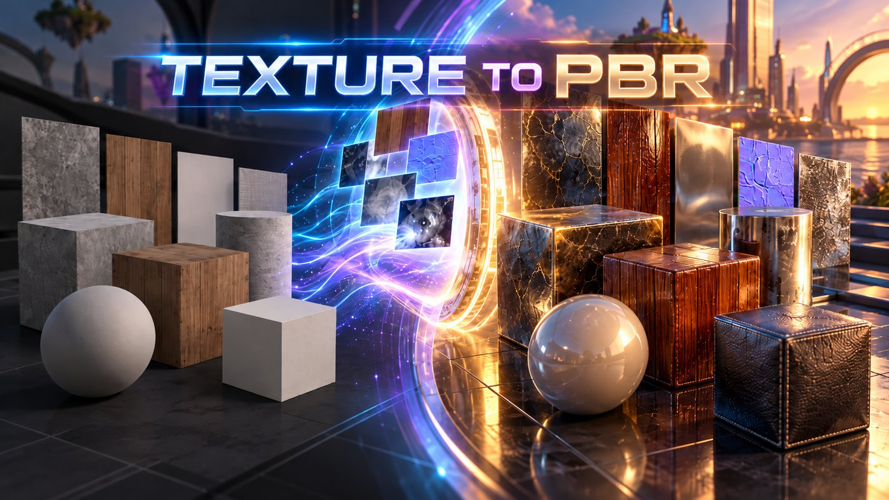

SKYRA Drone 3.0
Mini drone indossabile con HUD che segue il tuo avatar.Wearable mini drone with an HUD that follows your avatar.
Vedi sul Marketplace →See on the Marketplace →Creo script e gadget per Second Life, con l’aiuto dell’intelligenza artificiale. E lo dico apertamente.I make scripts and gadgets for Second Life, with the help of artificial intelligence. And I say so openly.

In Second Life dal 2007, prima con un altro avatar, poi con questo, quello che considero il mio vero volto qui dentro. Nel tempo ho provato un po’ di tutto: discoteche, locali, negozi. All’epoca era tutto molto più difficile da costruire rispetto a oggi.
Da qualche tempo mi sono avvicinato allo scripting e alla creazione di gadget, stanco di fare sempre le solite cose. In questo percorso uso l’intelligenza artificiale come aiuto per progettare e realizzare i miei prodotti, e lo dico apertamente: mi sembra giusto essere onesto con chi visita il mio negozio.
Quello che cerco di metterci è sempre lo stesso: buone idee e gadget simpatici, pensati per essere davvero utili a chi li usa.
In Second Life since 2007, first with another avatar, then with this one, the one I consider my real face here. Over the years I’ve tried a bit of everything: clubs, venues, shops. Back then, building things was a lot harder than it is today.
More recently I’ve turned to scripting and gadget-making, tired of doing the same old things. Along the way I use artificial intelligence to help design and build my products, and I say so openly: it feels right to be honest with the people who visit my store.
What I try to bring to every piece is always the same: good ideas and fun gadgets, made to actually be useful to the people who use them.
Mini drone indossabile con HUD che segue il tuo avatar.Wearable mini drone with an HUD that follows your avatar.
Vedi sul Marketplace →See on the Marketplace →
Luci, tende e sicurezza in un solo sistema, con pannelli a muro in vetro e HUD. Per chi costruisce e vende case già pronte da controllare.Lights, curtains and security in one system, with glass wall panels and an HUD. For those who build and sell ready-to-control homes.
Vedi sul Marketplace →See on the Marketplace →Radio futuristica a valvole: stazioni per genere, titolo del brano in riproduzione, backup e import delle stazioni, accesso per gruppo e manager.Futuristic tube radio: stations by genre, now-playing title, station backup and import, group and manager access.
Vedi sul Marketplace →See on the Marketplace →
HUD per creare cornici con le tue foto.An HUD to create frames with your own photos.
Vedi sul Marketplace →See on the Marketplace →
SL Materializer PBR trasforma una qualsiasi immagine in un materiale PBR pronto per Second Life. È gratis, funziona nel browser e le tue immagini non lasciano mai il tuo computer.SL Materializer PBR turns any image into a PBR material ready for Second Life. It is free, it runs in your browser, and your images never leave your computer.
Apri lo strumento →Open the tool →